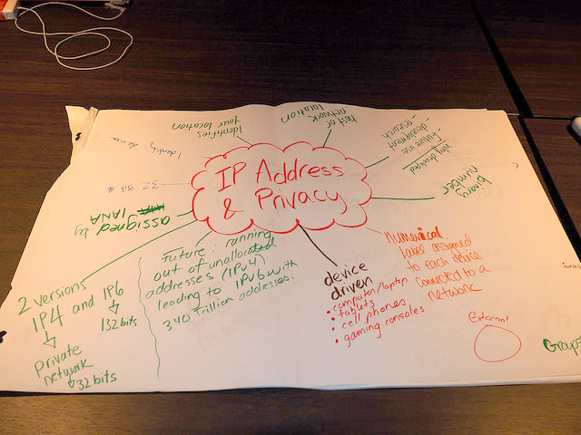

Section 1. Reading the Web
IP Address Tracer
This activity was remixed from Hive Toronto, and the original project was funded by the Office of the Privacy Commissioner of Canada (OPC). Remixed for Clubs by Mozilla.
Learners will explore internet protocol (IP) addresses and learn how it may be associated with themselves, a device, or a website. They will trace IP addresses and make a map.
30 - 45 minutes
-
Preparation
Do the activity on your own to become familiar with it.
Internet protocol (IP) addresses are a kind of personal information that may be collected online that many people do not even think about. Wikipedia defines that an IP Address is “a numerical label assigned to each device (e.g., computer, printer) participating in a computer network that uses the Internet Protocol for communication” (Wikipedia, “IP address”). An IP address is a string of digits that looks something like 192.206.151.131.
Low Connectivity Tips
If you want to facilitate this activity without computers you can print out a list of popular IP addresses and have your learners create a paper map. A printable worksheet is available for this activity for your learners to record their research responses on IP addresses. This activity will also work with one internet connected computer and a projector.
-
5
minLook up your IP address
Using an online resource to trace IP addresses (i.e., http://who.is or http://ipinfo.io or another of your choosing), look up your IP address.
Discuss whether the IP address reveals any information about you and what an IP address is.
-
10
minResearch IP Addresses
Using online search tools, see if you can find the answers to the following questions about IP addresses. Write down your responses by taking notes.
- Why were IP addresses developed and what role do they play in helping the internet work?
- What is the future of the IP address? State three facts about what is IPv6 and why it is important.
- What personal information does the IP address reveal about you?
Discuss these questions and learner's answers.
-
10
minIP Addresses of Your Favourite Sites
Alone or in a group, generate a list of your 5 favourite websites.
Look up the IP address of your 5 favourite websites using an an online resource to trace IP addresses (i.e., http://www.iptrackeronline.com/). Identify and collect information about 5 of your favourite websites:
Take notes on the following:
- Name and URL of website:
- IP Address
- City
- Country
- Latitude
- Longitude
-
15
minMapping IP Addresses
Use a paper map to mark the locations of the IP addresses for websites you have traced IP addresses for. Alternatively, you can use a service like Google maps to create your maps digitally.
Examine your map and explore the discussion questions through independent reflection or in a discussion group.
-
5
minDiscuss IP Addresses to Reinforce Learning
Do you think an IP Address is personal information? Why or why not? Discussion Tip: An IP Address is considered personal information by the EU and Canada, but not by the US or the UK. Learners in your group may be aware that sometimes organizations like a school share a single external IP address and argue against an IP address being PI.
Were there any websites that you tracked which masked their location information? Why would this be important?
Were there any websites that you tracked where the location information, such as the city or country, was different from where you thought the site should be located? Discussion Tip: Sometimes IP addresses are masked to appear to be elsewhere. This means that the location of the device or website is made to appear to be elsewhere in the world.
Can you find any statements on whether an internet company or government agency considers an IP address to be personal information?
Have you heard of any news stories involving IP addresses? What issues were at stake? Discussion Tip: Numerous news stories involve IP addresses. Some examples from 2014 - 2015 include Netflix’s perspectives on Canadians’ use of foreign IP addresses to access extra content or problematic changes, or vandalism, made to Wikipedia pages from particular IP addresses.
What steps do people take to keep their IP addresses private? Discussion Tip: Individuals may choose to use a virtual private network (VPN) or proxy to obscure their IP addresses.